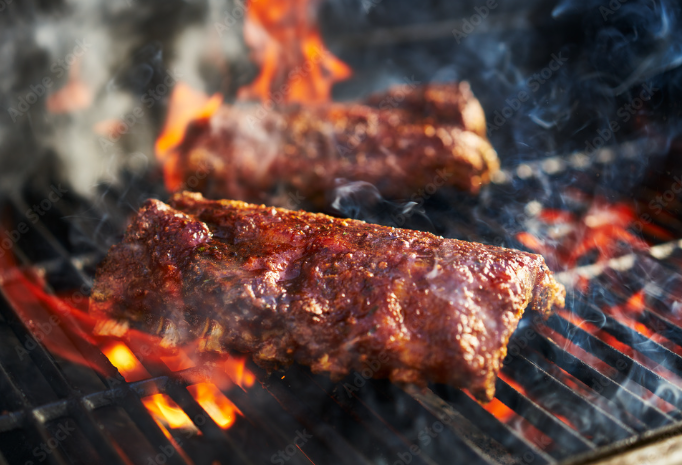

Ribs
History
BBQ ribs date back to the 19th century in the carribean, it then traveled to the us will it gained it populuarity.ribs are a staple of American barbecue. Memphis is famous for its dry-rubbed version, and rib tips are a staple at Chicagos South Side barbecue joints.
This Recipe makes a good, easy to make baby back ribs to make at any barbecue.
Ingredients
- 1 Cup of Barbecue Suace
- 2 Tablespoons of Apple Cider Vinegar
- 1/2 Teaspoon Cayeene Pepper
- 2 Tablespoons of Chilli Powder
- 2 Racks of Baby Back Ribs
- 1/2 Teaspoon Garlic Powder
- Salt and Ground Pepper
- 1/4 Cup Brown Sugar
- 1 Cup Chiken Broth
- 1/2 Teaspoon Onion Powder
Directions
- Mix the chilli powder, salt, cayeene pepper, galric powder, onion powder, and black pepper in a bowl than rub the mixture on both sides of the ribs
- Freeze overnight
- Or Freeze for a hour
- Preheat the oven to 250 degrees F. In a roasting pan, combine the broth and vinegar. Add the ribs to the pan. Cover with foil and tightly seal. Bake 2 hours. Remove the ribs from the pan and place them on a platter. Pour the liquid from the pan into a saucepan and bring to a boil. Lower the heat to a simmer and cook until reduced by half. Add the barbecue sauce.
- Preheat an outdoor grill to medium high. Put the ribs on the grill and cook about 5 minutes on each side, until browned and slightly charred. Cut the ribs between the bones and toss them in a large bowl with the sauce. Serve hot.

Sources
RitaE. Spare Ribs. August 25, 2022. https://pixabay.com/. https://pixabay.com/photos/spare-ribs-ribs-grill-bbq-7410911 and Adam's Taphouse and Grille Edgewater. History of BBQ Ribs. March 8, 2017. https://adamsgrilleedgewater.com/. https://adamsgrilleedgewater.com/history-of-bbq-ribs/#:~:text=And%2C%20the%20history%20of%20ribs,with%20flavors%20of%20European%20settlers.